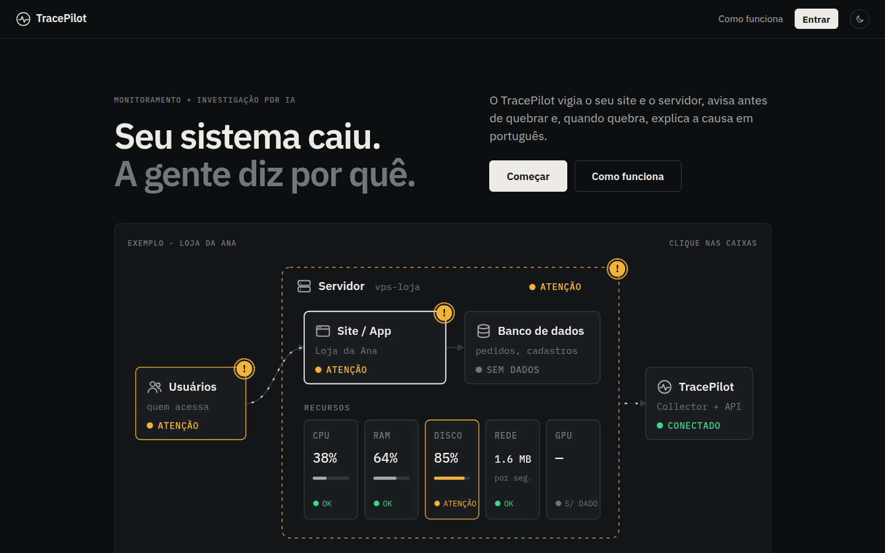

Vibe-code em produção.
Com monitoramento seguro.
Um time de agentes de IA vigia todo o ecossistema da sua solução, avisa quando algo quebra ou corre risco e ajuda a resolver.
sites e e-commercesaplicativosAPIs e backendssistemas internosSaaS
AKCIT Camp 2026 · Hackathon online · Dyonnatan Maia e Lucas Chagas · Brasília
01 · O problema
A IA escreve o código. Ninguém vigia o que foi para produção.
código geradopor IA, ninguém leu tudo
deploy rápidosem time de plataforma
erroslogs, traces, métricas
segurançaacessos e arquivos
usuáriorelato vago
⟶
“Não consegui concluir a compra.”Quando quebra, quem gerou o código não sabe onde olhar. As ferramentas de monitoramento foram feitas para quem já sabe.
Vibe-coders, software houses e startups colocam software no ar sem SRE e sem especialista em segurança.
02 · A solução
Agentes vigiando todo o ecossistema.
O que o time vigia
Aplicaçãoerros, logs e tracesFUNCIONA
ServidorCPU, memória, disco, redeFUNCIONA
Usuáriodo relato ao erro no backendFUNCIONA
Segurançalogin, arquivos, comandosPRÓXIMA FASE
1
Avisa
Quebrou ou pode quebrar? Alerta em linguagem simples, sem painel de engenheiro.
2
Investiga
Agentes especialistas cruzam as fontes e um verificador contesta a conclusão.
3
Apoia a correção
Entrega um prompt pronto para a mesma IA que gerou o código consertar o problema.
03 · MVP funcional
Já monitora e já explica a causa.
painel TracePilot

Mapa do software, recursos e alertas.
✓ verificadoinvestigação real · ~45 s
relato: “cliente não conseguiu finalizar a compra, erro 500”
Causa provável
O checkout quebra quando o pedido chega com quantidade zero.
O que fazer
Bloqueie quantidade zero no formulário e trate esse caso no backend.
Evidência
ZeroDivisionError · POST /checkout · 500
calcular_preco_unitario_efetivo()
trace_id correlacionado ao log
+ prompt pronto para a IA de código corrigir
04 · Arquitetura de IA
Um time de agentes, não um chatbot.
Coletor Rustinstalável, ~2 MB
API diretasem instalar nada
OpenTelemetrylogs e traces da app
›
OTel Collectorpadrão aberto
↓
OpenObservearmazena e consulta
›
LANGGRAPH · SUPERVISOR-TRABALHADOR
Orquestradorcoordena a investigação
logsagente
métricasagente
tracesagente
↓ resumos restritos à evidência
Diagnóstico1–3 hipóteses, cada uma com confiança e evidência
↓
VerificadorLLM adversarial + modelo de decisão não-gerativo
›
Resumo simplescausa + até 2 ações
Relatório rastreávelcausa, evidência, limitações
Prompt de correçãopara colar na IA de código
Issueno GitHub (opcional)
agente de segurança entra no mesmo grafo (Wazuh)
modelos locais ou nuvem, mesma interface
agentes só leem, nunca escrevem
sem remediação automática: a IA diagnostica, o humano decide
05 · Concorrentes e diferencial
Eles servem o SRE. Nós, quem vibe-codou.
| Foco | Para quem | IA de causa raiz | Dados |
|---|
| Sentry | erros de aplicação e stack traces | desenvolvedores | Seer, dentro do Sentry | nuvem do Sentry |
| Datadog | plataforma completa de infraestrutura | times de plataforma e SRE | Bits AI, dentro do Datadog | nuvem do Datadog |
| TracePilot | aplicação, servidor e (em breve) segurança em uma visão | quem não é SRE: vibe-coders, software houses, startups | time de agentes + verificador que contesta | stack aberta; modelo local opcional |
Ser justo com eles: também têm IA. Nossa aposta é outra: linguagem de quem não é SRE, o prompt de correção para a sua IA de código e dados sob o seu controle, sem prender você a uma plataforma.
06 · Benchmark de referência: OpenRCA
IAs de ponta, sozinhas: 11 em 100.
Microsoft · ICLR 2025335 falhas reais+68 GB de telemetria3 sistemas empresariais
Falhas resolvidas · melhor publicado
11,34%
A IA solitária não bastaCausa raiz exige cruzar logs, métricas e traces em volumes enormes. Um modelo sozinho se perde.
Nosso próximo passoRodar o sistema agentico no OpenRCA: especialistas por fonte, generalista que consolida e verificador que contesta, com menos tokens.
Já entregamos ~45 s por investigação e ~300 ms por decisão do verificador, num MVP funcional.
07 · Mercado e modelo de negócio
Observabilidade mostra o quê. Nós, o porquê.
US$ 10 bi → 23 bi
Mercado global de ferramentas de observabilidade, de 2025 a 2031 (~14% ao ano). E cada vez mais código chega à produção gerado por IA.
focovibe-coders, software houses, startups e pequenas equipes
depoistimes de plataforma e SRE em empresas médias
Fonte: MarketsandMarkets (US$ 10,47 bi em 2025 → US$ 22,99 bi em 2031). Estimativas variam conforme a definição de mercado.
Núcleo abertoSelf-hosted, dados locais
Base aberta (OpenTelemetry + OpenObserve) cria confiança e adoção.
AssinaturaPor serviço monitorado
Investigações incluídas por plano; sem exigir time de SRE para usar.
GerenciadoNuvem e suporte
Hospedagem, memória de incidentes, segurança e integrações.
Estrutura de preço é hipótese a validar nas mentorias.
08 · Equipe
Os dois lados do problema: IA e produção.
DM
Dyonnatan Maia
Líder · IA e avaliação de modelos
Projetos de IA, visão computacional (câmeras de segurança, alta disponibilidade e recursos limitados) e linguagem natural, com avaliação quantitativa de modelos. Competições internacionais, com uma vitória. POCs e um PD&I em estágio avançado (EstimaNutri). Construiu o MVP do TracePilot.
LC
Lucas Chagas
Software em produção · full-stack
Engenheiro de Software, trabalhou na Akuntsu, Globalweb, iFut (Cotidiano Aceleradora), bxblue (Y Combinator), Verde (Y Combinator), Locaweb e AgSUS. Desenvolveu apps desde soluções em IoT até mercado financeiro, com crédito consignado e crédito rural. Usa IA no desenvolvimento e acompanha novos modelos.
Por que nós: um já mediu modelos de IA, o outro já sustentou incidente em produção. Aprendemos que solução plausível não basta: diagnóstico tem de ter evidência verificável.
09 · O que buscamos
O que o AKCIT Camp acelera.
01Validar o problema com quem vibe-coda e publicamentorias com times de desenvolvimento
02Construir a camada de segurança com privacidadeWazuh opt-in: login, arquivos e comandos
03Definir MVP e modelo de um produto acessívelavaliação, guardrails, memória e LLMOps
próximos passos
1Agente de segurança no grafo (Wazuh)
2Benchmark OpenRCA com três configurações
3Roteamento dinâmico e memória de incidentes
4Instalador do coletor (MSI/pkg/deb)
Vibe-code em produção. Com quem vigia por você.